1
記録方法の選択
記録を開始したら、「画像を選んで記録」「画像なしで記録」「巻藁を記録」から方法を選びます。
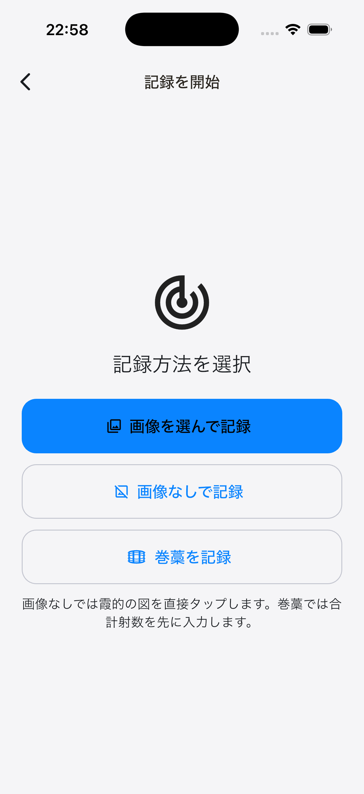
使い方ガイド
基本的な操作を、実際の画面とともに確認できます。
1
記録を開始したら、「画像を選んで記録」「画像なしで記録」「巻藁を記録」から方法を選びます。

2
画像を拡大し、的の外周と中心を合わせた後、矢が刺さった位置を記録します。
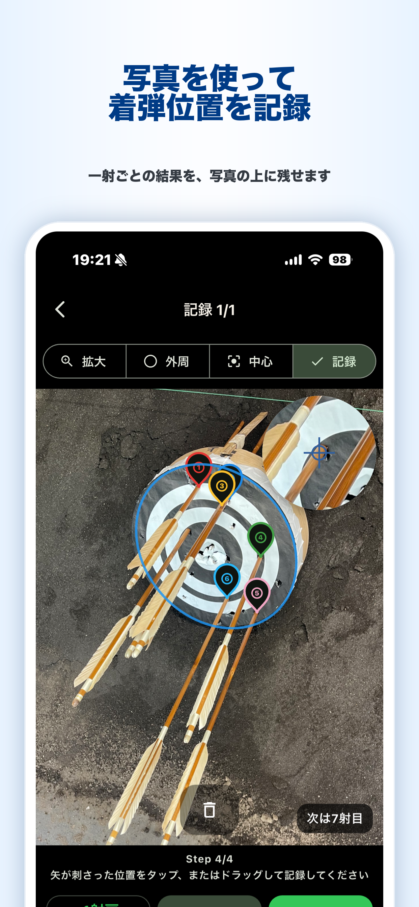
3
保存前に近的または遠的を選びます。遠的では、距離、的の直径、的の種類、風向き、風速を記録できます。
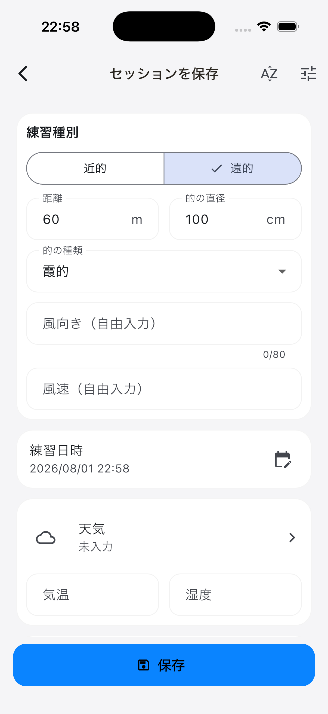
4
写真を用意せず、画面の的をタップまたはドラッグして矢所を記録できます。近的・遠的、霞的・カラー的を切り替え、的の表示サイズも調整できます。
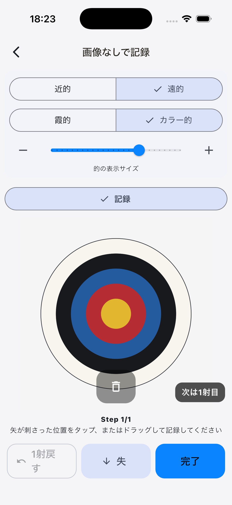
5
最初に合計射数を入力します。射ごとのメモ、射形画像、気づきは、必要な射だけ追加できます。
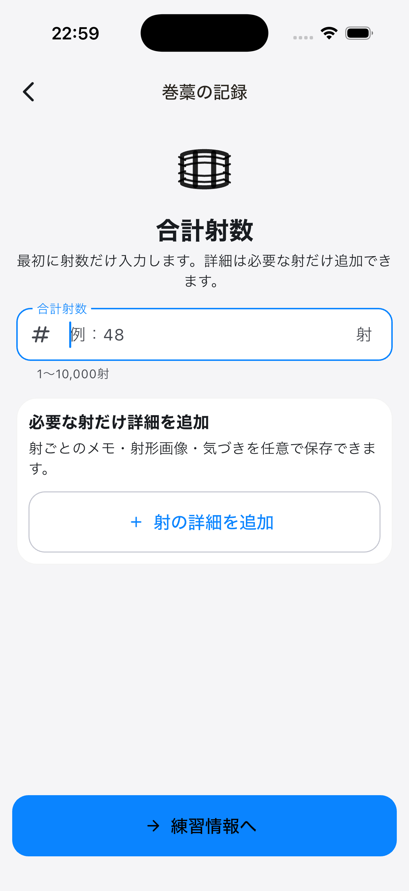
6
履歴では練習種別を確認できます。検索欄と絞り込みを使い、メモ、弓道場、道具、練習種別などで記録を探せます。
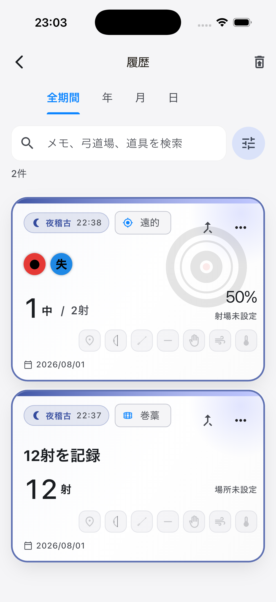
7
稽古で得た気づきを、タイトル、日時、場所、タグ、本文とともに残せます。画像などを添付し、稽古記録や別のノートと関連付けることもできます。
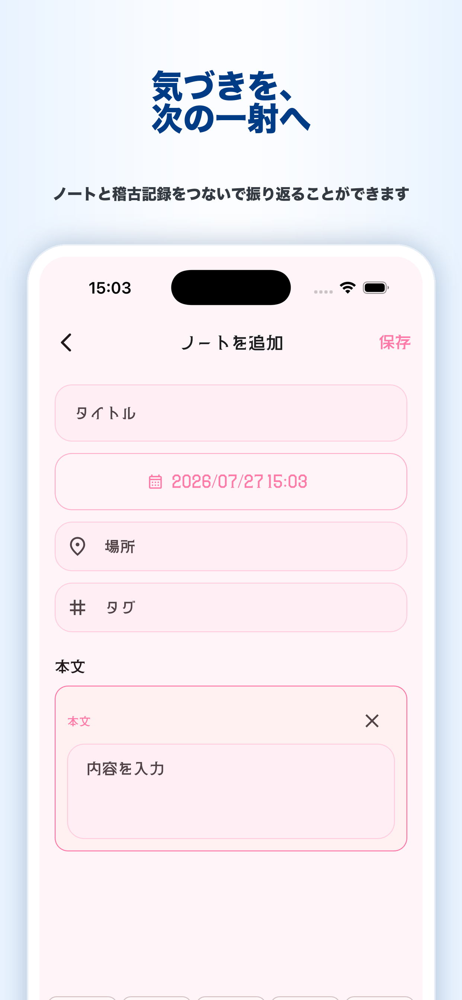
8
調子が良かったとき・崩れたときの感覚や出来事と、その解決方法を組にして蓄積できます。道具やプラス・マイナスで絞り込めます。
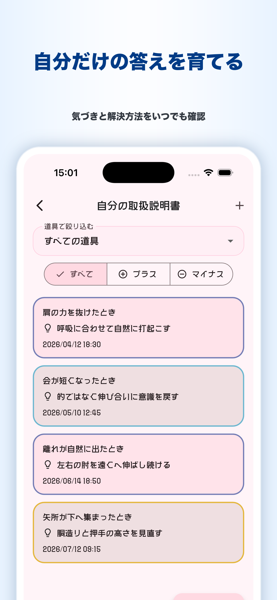
9
射ごとに保存した射形画像と気づきを一覧できます。2枚を選んで比較し、必要に応じて画像のぼかしを調整できます。
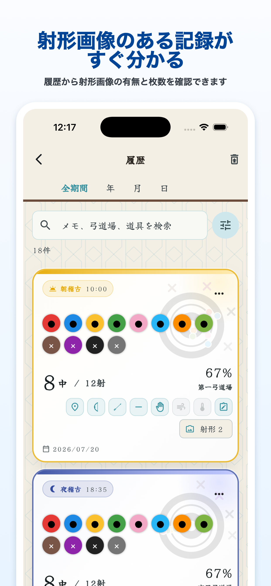
10
画面上部の練習種別から、「全て」「的を使った記録」「近的」「遠的」「巻藁」を切り替えます。
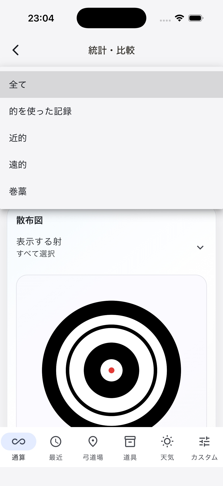
11
「ZIPバックアップを共有」で記録や画像、道具、プロフィール、ノート、設定を保存できます。復元は「ZIPバックアップから復元」から行います。
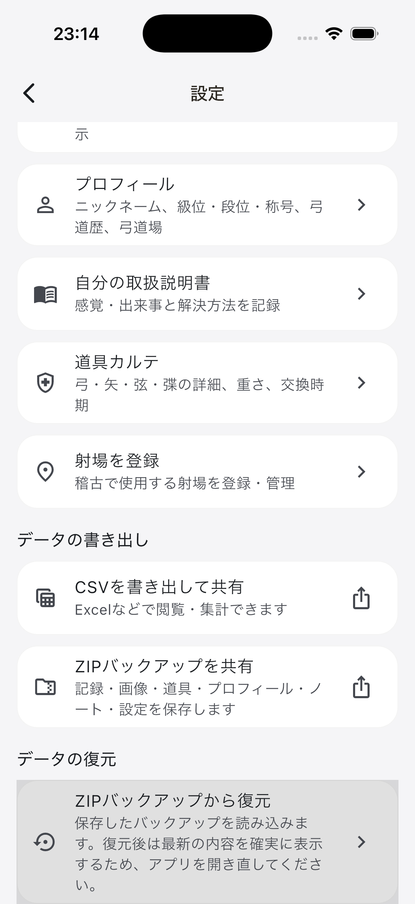